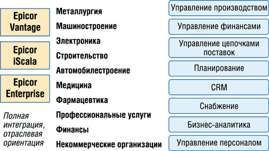
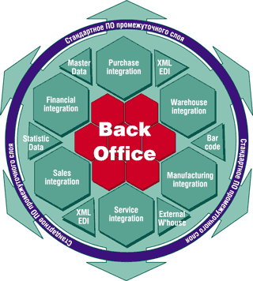
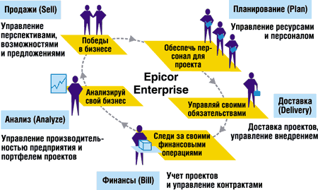

Сергей Шведов,
руководитель Epicor Enterprise Solution Group (международные подразделения исследований
и разработок)
sshvedov@epicor.com
Сегодня перед средним бизнесом острее, чем когда-либо, встают сложные задачи организации работы в условиях глобальной экономики, где все очень быстро меняется. Если раньше жизненный цикл продуктов измерялся годами, то теперь это месяцы и даже недели. Успешные компании на новом уровне используют усовершенствования в процессах и технологиях - от разработки до обслуживания - для постоянного сокращения срока выпуска продуктов на рынок и повышения эффективности операций. Для сохранения конкурентоспособности средним предприятиям необходимо быть готовыми к быстрой адаптации своих систем и бизнес-процессов к изменяющимся тенденциям рынка и спросу. Для поддержки этих требований компаниям нужно сделать свои технологии интуитивно понятными, отвечающими запросам клиентов и адаптируемыми. Кроме того, технологии должны быть доступными и иметь приемлемую цену, что особенно важно для средних компаний.
Web-сервисы предоставляют сегодня недорогую и адаптируемую технологическую инфраструктуру, которая со временем может обеспечить средним предприятиям значительное снижение совокупной стоимости владения. Web-сервисы можно использовать для динамической интеграции приложений без дорогостоящего и требующего времени программирования. Тем самым сокращается время реализации, упрощается инсталляция и в конечном счете ускоряется окупаемость инвестиций в ПО.
Благодаря Web-сервисам интеграция не ограничивается больше стенами предприятия. Теперь компании могут легче и не затрачивая больших средств интегрировать свои процессы с системами, находящимися за пределами их внутренней сети, объединяя их с системами заказчиков, партнеров, поставщиков - и далее по цепочке формирования добавленной стоимости, улучшая тем самым возможности межкорпоративного сотрудничества. С помощью Web-сервисов такая интеграция достигается значительно меньшими усилиями и не требует детального понимания того, как построены информационные системы у поставщиков, партнеров и заказчиков. Например, дистрибьютор может повысить эффективность управления своей цепочкой поставок за счет аутсорсинга управления запасами; для этого достаточно просто авторизовать систему партнера для использования Web-сервисов дистрибьютора через Интернет.
Развивая общую технологическую стратегию, поставщики ПО корпоративного класса должны определить, какая технология Web-сервисов наилучшим образом отвечает требованиям их заказчиков и рынка. К набору средств и функциональности компании среднего размера обычно предъявляют те же требования, что и крупные, глобальные организации, однако при этом располагают существенно более ограниченными бюджетом и ресурсами.
Microsoft .NET для предприятий среднего бизнеса
Технология Web-сервисов может быть катализатором для разработки и развертывания широкого спектра решений, доступных на любом устройстве, в любое время и в любом месте. Кроме того, для среднего бизнеса наиболее эффективный способ ее реализации состоит именно в использовании технологии Microsoft .NET, обеспечивающей технологический фундамент и среду разработки для построения и интеграции Web-сервисов.
Когда американская корпорация Epicor Software (http://www.epicor.com) поставила перед собой задачу создания корпоративных приложений следующего поколения, технология Microsoft .NET была бесспорным вариантом для реализации зрелой и полной архитектуры Web-сервисов для глобального рынка средних компаний. В июне 2004 г. Epicor приобрела компанию Scala Business Solutions, в результате чего была создана действительно глобальная организация, стремящаяся решить проблемы, стоящие перед средними компаниями всего мира. Ее продукты инсталлированы в 140 странах и локализованы для 32 языков. Общий доход объединенной компании в 2004 г. составил 250 млн долл.; из них 52% пришлось на Северную Америку, 48% - на регион EMEA, Азию и развивающиеся рынки.
Как и Epicor, Scala использовала возможности архитектуры Web-сервисов и Microsoft .NET в разработке своей системы iScala Collaborative ERP для планирования ресурсов предприятий.
Созданная специально для средних компаний и организаций, а также для подразделений крупных предприятий, нуждающихся в экономичных и интегрированных корпоративных решениях, система Epicor iScala представляет собой глобальное корпоративное решение, обеспечивающее полные возможности управления бизнесом в компаниях, работающих в разных регионах мира. Решение iScala предлагает полную функциональность ERP, CRM и управления цепочками поставок (SCM, supply chain management), включая такие возможности, как многовалютные операции, поддержка международных правил налогообложения и НДС (VAT), бизнес-аналитика, и соответствует требованиям заказчиков, работающих в более чем 140 странах.
И Epicor, и Scala выбрали Microsoft .NET в качестве основы для создания корпоративных приложений следующего поколения, предоставляющих заказчикам следующие ключевые преимущества:
- расширенные возможности работы для пользователей;
- динамичная, надежная технология;
- новые уровни расширяемости и совместимости с другими продуктами;
- переносимость, гибкость, масштабируемость и безопасность;
- более низкая совокупная стоимость владения.
С точки зрения разработки применение технологии Microsoft .NET для создания корпоративных приложений на основе Web-сервисов позволяет поставщику намного быстрее выводить решения на рынок. Быстрая разработка - огромное преимущество использования .NET. Благодаря языку программирования Microsoft C#, платформе Microsoft .NET Framework и среде разработки Visual Studio .NET распределенная команда разработчиков способна чрезвычайно эффективно создавать Web-сервисы. Например, Epicor может примерно за два дня разработать форму Web-клиента, связать ее с Web-сервисом и реализовать соответствующую бизнес-логику. Обычно эта задача занимает не менее двух недель.
Значительное преимущество Web-сервисов - возможность поддержки нескольких пользовательских интерфейсов при взаимодействии с одним Web-сервисом. Microsoft .NET дополнительно расширяет эти возможности, позволяя создавать интерфейсы с помощью Visual Studio .NET и полнофункциональных клиентов и интерфейсы типа браузера. Новые инструменты и среда разработки в Microsoft .NET значительно упрощают создание Web-сервисов. При их разработке логика приложения или сама функциональность не меняется; меняется поведение приложения - то, каким образом проявляется функциональность продукта, т. е. набор Web-сервисов для пользователей и/или разработчиков. По существу появляется возможность разбивать приложение на небольшие программные компоненты, доступные из любого места через Интернет.
Для заказчиков это означает мощную, быструю и недорогую персонализацию. Они получают возможность сводить вместе различные аспекты приложений согласно индивидуальным требованиям, будь то их базовая система для поддержки операций, системы поставщиков или клиентов. Например, если в компании выбрали интегрированное решение Epicor для управления финансами, но хотят использовать модуль поддержки налогообложения от независимого разработчика, то можно просто переместить его мышью в рабочую область приложения. Для этого не нужно никакого ПО промежуточного слоя, не потребуется решать вопросы совместимости, нет дополнительных затрат на интеграцию.
Если, к примеру, компания курьерской доставки занимается планированием в реальном времени и хочет сделать эту информацию доступной для клиентов также в реальном времени на своем Web-сайте, проблем с этим не будет. Снимаются и технические барьеры для перехода на электронное ведение бизнеса, что позволяет компаниям принимать стратегические, а не определяемые технологиями решения, касающиеся организации цепочек поставок и партнерства.
История инноваций
И Epicor, и Scala имеют продолжительный опыт использования новых технологий корпорации Microsoft. Компания Epicor стала первым поставщиком приложений корпоративного класса, внедрившим Microsoft SQL Server у 1000 заказчиков, и в настоящее время включена в программу Microsoft Yukon Ascend Program (фазы I и II). Обе компании получили признание Microsoft за технологические инновации: система Scala была в 2001 г. удостоена звания "ERP-система года" (ERP Solution of the Year), корпорация Epicor была в том же году финалистом конкурса на звание "ERP-решение года", в 2003 г. Microsoft присвоила продуктам Epicor в Западной Европе звание "Решение года на базе .NET" (.NET Solution of the Year), а в 2004 г. объединенная компания вышла в финал борьбы за получение звания "Глобальный независимый поставщик ПО года" (Global ISV of the Year).
Epicor и Scala были среди первых поставщиков решений корпоративного класса, использовавших Extensible Markup Language (XML), стандартный язык Web-сервисов. Будучи одной из первых компаний, внедривших Microsoft Visual Studio for Applications (VSA), корпорация Epicor была и первым независимым поставщиком ПО класса ERP, приступившего к поставке приложений с поддержкой VSA. В решениях Epicor и Scala используются такие технологии Microsoft, как SQL Server 2000 и SQL Server 2005 (под кодовым наименованием Yukon), Windows Server 2003, Visual Studio .NET и Whidbey (кодовое наименование следующей версии Visual Studio), Microsoft Business Framework, .NET Framework, BizTalk Server 2004, SharePoint Server, Office 2003, Project Server 2003 и Longhorn (следующая версия ОС Windows).
Корпоративные решения на базе Web-сервисов
Корпорация Epicor уделяет основное внимание разработке комплексных отраслевых решений (рис. 1) для производственных предприятий, компаний, занимающихся дистрибуцией, финансовыми услугами, компаний, работающих в сфере гостиничного бизнеса и развлечений, фармацевтических компаний, а также некоммерческих организаций.
|  |
| Рис. 1. Вертикальные решения Epicor и продуктовые линейки.
|
Корпоративная информационная система Epicor iScala - это глобальное рентабельное решение, отвечающее специфическим требованиям и соответствующее бизнес-процессам предприятий, работающим в таких областях, как производство под заказ, производство промышленного и электротехнического оборудования, автомобильная промышленность, производство электроники, товаров повседневного спроса, некоммерческих организаций.
Epicor предоставляет комплексное решение для компаний среднего бизнеса, работающих на международном рынке. От автоматизации взаимоотношений с клиентами (CRM) и деятельности корпоративных служб до автоматизации финансов компании и управления цепочками поставок - для всех этих областей у Epicor имеются гибкие и динамичные решения. Решения Epicor сопровождаются полным пакетом сервисов, обеспечивая единую систему отчетности, что в свою очередь отражает быстрый возврат инвестиций и низкую общую стоимость права собственности.
Компания планирует скоро выпустить первое в отрасли производственное решение Vantage 8.0, полностью основанное на сервис-ориентированной архитектуре. Будучи комплексным решением для автоматизации бизнес-процессов в компаниях, которые занимаются производством изделий на заказ (MTO, make-to-order) и работают в смешанном режиме, ПО Vantage 8.0 поддерживает решение административных и вспомогательных задач и реализовано на базе n-уровневой архитектуры, поддерживающей Microsoft .NET и Web-сервисы.
Ниже мы приведем несколько примеров тех преимуществ, которые приобрели клиенты компании Epicor из разных сфер бизнеса благодаря использованию решений на основе Web-сервисов.
iScala Connectivity Solutions
Scala была одной из первых среди разработчиков ERP-систем, кто стал использовать архитектуру Web-сервисов на базе XML еще в 2000 г., - как раз тогда были выпущены решения iScala Connectivity Solutions (рис. 2). Эти решения расширяют возможности традиционных ERP-систем, автоматизируя задачи и процессы, чтобы сотрудники компании могли сконцентрироваться на процессах создания добавленной стоимости, например, принимать решения по запросам или рассматривать нестандартные/большие заказы, вместо того чтобы тратить время на рутинные задачи (например, повторный ввод данных).
|  |
| Рис. 2. Набор решений iScala Connectivity Solutions.
|
iScala Connectivity Solutions предназначены для того, чтобы интегрировать iScala с любыми другими приложениями и внешними системами, такими, как сети EDI, различные приложения, установленные у заказчиков или поставщиков, и/или масштабные приложения в головном офисе компании (SAP, Siebel и т. д.). iScala Connectivity Solutions используют открытые отраслевые стандарты и технологии, что позволяет компаниям развертывать решения именно в данный момент, зная, что их инвестиции будут оправданы в обозримом будущем.
Оптимизация бизнес-процессов
Компания Georg Fischer, ведущий партнер по развитию и поставщик современных систем для промышленных предприятий со штаб-квартирой в Швейцарии, была одной из первых компаний, внедривших корпоративную информационную систему iScala.
Успех на рынке такой компании, как Georg Fischer, зависит от эффективности корпоративной информационной системы. Внедрение системы Scala как в мелких, так и в средних по величине представительствах компании по всему миру позволило швейцарской промышленной группе ввести единый стандарт представления итоговых данных во всех своих офисах. Большое преимущество дает тот факт, что системы Scala, внедренные в представительствах компании по всему миру - в Европе, Азии, Австралии, интегрированы между собой и с внедренной в головном офисе и в крупных подразделениях компании системой SAP (благодаря способности iScala к интеграции), в результате чего компания может работать в единой корпоративной информационной системе.
Шанхайский офис Georg Fischer (Китай) работал с полным пакетом модулей корпоративной информационной системы Scala с 1998 г. До интеграции системы Scala с системой SAP, используемой в головном офисе компании Georg Fischer Piping Systems, отдел закупок вынужден был отправлять заказы для исполнения в головной офис компании по факсу. По оценкам менеджеров компании, выполнение заказа занимало около недели, и при такой организации бизнеса нельзя было и думать о его развитии в будущем. Благодаря интеграции системы Scala с внедренной в головном офисе компании системой SAP теперь удается исполнять заказы в тот же день. И хотя бизнес компании заметно вырос, работы у сотрудников добавилось не так уж много.
Встраиваемое готовое решение CRM
Разработка недорогих и масштабируемых решений CRM корпоративного уровня получила еще одно направление благодаря тому, что Epicor при покупке компании Scala приобрела и систему iScala Collaborative ERP. ПО iScala CRM было разработано в тесном сотрудничестве с Microsoft и выпущено в декабре 2003 г. как интегрированное решение для корпоративных заказчиков iScala. Благодаря архитектуре на базе Web-сервисов и использованию XML система iScala CRM доступна из Microsoft Outlook и через Web, может легко интегрироваться с любым применяемым в компании приложением ERP, обеспечивая хранение всей относящейся к клиентам информации в одном месте, что позволяет получать полную информацию о заказчиках. Кроме того, к iScala CRM можно быстро и эффективно обращаться через Microsoft Outlook, что дает возможность управлять всеми операциями, электронной почтой, счетами клиентов, расчетами по сделкам и другой связанной с продажами информацией в интерфейсе Outlook.
Гибкость и возможности интеграции
Два заказчика ПО iScala в Венгрии были в числе первых компаний, которые приобрели iScala CRM. Компания Umicore, производитель металлоконструкций для строительной отрасли, использовала систему Scala с 1995 г., а в ее штаб-квартире применялось ПО SAP. Как отмечает генеральный менеджер Umicore-Hungary Чаба Янош Надь (Csaba Janos Nagy), компания выбрала iScala CRM для поддержки своих рыночных операций, поскольку она одновременно занималась несколькими проектами, работая с огромными объемами информации, и возможность обрабатывать и анализировать эту информацию была важна для руководства и сотрудников фирмы.
NJF Kft, частное агентство телемаркетинга, работающее с Umicore, также дополнила уже установленное решение Scala системой iScala CRM. Для NFJ, как поясняет г-н Надь, было решено внедрить решение CRM, чтобы обеспечить лучшую видимость и учет процессов обслуживания заказчиков. По мнению г-на Надя, iScala CRM служит инструментом управления для контроля исполнения при реализации проекта.
Компания Retecma (Мексико-Сити), дистрибьютор активных фармацевтических ингредиентов (API), выбрала iScala CRM в основном благодаря простоте использования и гибкости этого интегрированного решения, предоставляющего сотрудникам отделов продаж и службы поддержки клиентов информацию, необходимую для повышения эффективности продаж и качественного предоставления услуг.
Как дистрибьютор API компания должна иметь возможность очень точно контролировать отдельные компоненты и партии, поясняет Райнер Мартенс, генеральный менеджер компании Retecma. Поскольку Scala уже имеет большой опыт в этой области, в компании уверены в том, что ПО iScala соответствует их требованиям. В частности, поскольку это интегрированное решение ERP и CRM, оно способно синхронизировать данные о клиентах в масштабах всей системы.
Автоматизация корпоративного сервиса
В июне 2003 г. корпорация Epicor выпустила первое решение для автоматизации корпоративного сервиса (ESA, enterprise service automation) на базе XML и Web-сервисов, ориентированное на средние компании, работающие с проектами. Решение Epicor for Service Enterprises (рис. 3) - часть отраслевых решений Epicor, реализованных на базе технологии Microsoft .NET и поддерживающих новую платформу Epicor ICE (Internet Component Environment) для быстрой разработки приложений Web-сервисов. Оно было полностью реализовано всего за 24 месяца. ПО Epicor for Service Enterprises прошло тестирование, чтобы получить от корпорации Microsoft логотип .NET Connected, и сертифицировано для Windows Server 2003.
|  |
| Рис. 3. Epicor for Service Enterprises - решение для комплексной автоматизации сервиса.
|
Epicor ICE - это прикладная среда следующего поколения для решений корпоративного класса, использующих полные и детальные Web-сервисы на базе XML. Это "сборочное решение" предоставляет более широкие возможности выбора и контроля. Платформа ICE, реализованная на основе Microsoft Visual Studio .NET и работающая поверх Microsoft .NET Framework, демонстрирует еще более ценные свойства Web-сервисов. ICE обладает повышенной гибкостью и простотой использования благодаря тесной интеграции детальных компонентов, которые обеспечивают эффективное и не связанное с большими затратами взаимодействие с существующей информационной инфраструктурой, а также с поставщиками, партнерами и заказчиками. ICE использует технологию Secure Socket Layer (SSL) и протоколы безопасности Microsoft Windows, включая Active Directory LDAP, обеспечивая доступ к системе только пользователям и компонентам с необходимыми полномочиями.
Решение Epicor for Service Enterprises, в отличие от многих других приложений корпоративного уровня, не построено на основе сложного, монолитного и часто дублируемого программного кода. Вместо этого в нем применяются Web-приложения, обращающиеся к Web-сервисам, которые вызывают такие функции, как управление возможностями, планирование проекта, управление ресурсами и финансовый анализ. Для более эффективного управления важными бизнес-процессами - от планирования ресурсов и проектов до контроля за командировками, расходами и счетами, Epicor for Service Enterprises использует более 60 Web-сервисов. Архитектура данного решения позволяет реализовать весь спектр его функциональности на основе Web-интерфейса.
Эффективность работы поставщиков услуг
Компания StreamServe, поставщик решений для коммуникаций в сфере бизнеса, стала первым заказчиком, внедрившим Epicor for Service Enterprises. StreamServe требовалось повысить эффективность операций в консалтинговых подразделениях и реализовать центральный механизм для планирования проектов и ресурсов, регистрации времени работы консультантов и подготовки счетов клиентов.
Будучи развивающейся организацией, StreamServe понимала необходимость эффективных бизнес-процессов в масштабе всей компании. Как рассказывает Род Килгур (Rod Kilgour), вице-президент компании StreamServe, ранее 11 менеджеров по обслуживанию нередко вручную вводили одну и ту же информацию для планирования ресурсов и подготовки счетов. Этот подход был не только крайне неэффективен по затратам рабочего времени, но и приводил к ошибкам.
Для решения этих проблем в своем скандинавском консалтинговом подразделении StreamServe выбрала решение Epicor for Service Enterprises. Поскольку это открытое решение на основе Web-сервисов, StreamServe смогла интегрировать его с уже существующими системами. Компания обеспечила взаимодействие своей платформы CRM, системы бухгалтерского учета и Epicor for Service Enterprises с помощью собственной платформы StreamServe Business Communication Platform (BCP).
После того как первая информация о затрачиваемом времени и расходах консультантов StreamServe вводится в приложение Epicor, счета для заказчиков полностью оформляются уже через неделю. Одновременное выполнение унаследованных бизнес-систем, ранее поддерживавших эти функции, и нового решения позволило убедиться в точности информации, генерируемой новым приложением.
Для компании StreamServe очень важен своевременный доступ к управленческой информации. Ранее отчеты приходилось готовить профессиональным менеджерам по обслуживанию, и после сбора всей информации это требовало 10-15 дней. После внедрения решения Epicor for Service Enterprises на основе .NET компания StreamServe смогла обеспечить своевременный доступ к информации во всех своих службах.
Недорогие Web-сервисы для среднего бизнеса
По данным Gartner Group, одна из лучших стратегий доступа к Web-сервисам состоит в обращении к поставщикам, с которыми уже установлены надежные рабочие отношения*. Эти поставщики реализуют возможности Web-сервисов в своих продуктах (например, серверах и инструментах разработки приложений). Можно использовать эти возможности для создания собственных стратегий внедрения Web-сервисов, не прибегая к покупке новых продуктов.
* См. Gartner Research Note, Client Issues for Web Services. October 10, 2003.
Для среднего бизнеса очень важно, чтобы в стратегии внедрения Web-сервисов основное внимание уделялось преимуществам для бизнеса, а не "технологии ради технологии". Одно из ключевых преимуществ технологии Web-сервисов состоит в возможности развития и расширения традиционных систем с сохранением инвестиций в ИТ. При этом создается платформа для роста и развитые возможности для взаимодействия в бизнесе. Рассматривая варианты реализации Web-сервисов, компании среднего размера сначала должны проанализировать свои собственные требования к бизнесу, а затем оценить, как наилучшим образом использовать существующие корпоративные системы. Такие компании могут получить множество преимуществ от реализации технологии Web-сервисов, позволяющей им быстро реагировать на изменения, приводить свой бизнес в соответствие с требованиями роста, добиваясь при этом низкой стоимости владения.